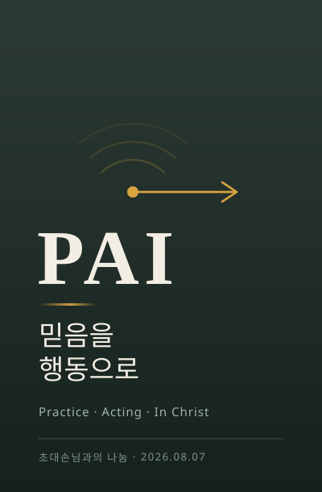

로봇은 센서로 감지해 움직입니다.
신앙은 기도로 감지하고 행동으로 움직입니다.
이날은 책 나눔 대신, 물류를 전공한 한 집사님이 「피지컬 AI」에서 착안한 신앙의 구조를 자기 삶으로 풀어 놓았습니다. 개념 하나가 남았습니다 — PAI.
이날은 정해진 책 없이 초대 손님의 간증과 사역 나눔으로 진행했습니다. (성함·소속 기관 등 식별 정보는 익명 처리했습니다. 제3자에 관한 언급은 싣지 않았습니다.)
올해 일흔이 되셨습니다. 기업체에서 일하다 늦게 교수가 되어 정년을 채우고, 다시 초빙으로 들어가 2026년 3월에 퇴직하셨습니다. 전공은 물류. 지금도 프로젝트와 기업 컨설팅을 이어가고 계십니다.
신앙의 이력은 평탄하지 않았습니다. 대학 다닐 때 잠깐 다니다 교회가 없어졌고, 40대 중반에 다시 나오셨습니다. 본격적으로 신앙생활을 하신 것은 50대 말이었습니다. 그 뒤 15교구에서 회장을 맡고 SLS 1·2·3 과정을 모두 거치며 13년을 보내셨습니다.
그러다 어느 순간 물음이 왔다고 하십니다.
그래서 제일 밑바닥부터 하자고 정하신 것이 기도청소부였습니다. 십여 년 전, 지금처럼 정돈되기 전이라 화장실 변기까지 직접 닦으셨다고 합니다.
작은 교회에서 여러 역할을 감당하는 분들이 존경스러웠다고 하셨습니다. 대형 교회는 어디를 가도 신경 쓸 일이 없고 편한데, 그 편함이 오히려 회의를 불러왔다는 것입니다.
3년 전 만드신 것이 BTS 청년 자립 멘토단입니다. 이름은 Be Together Serve — 함께 섬긴다는 뜻입니다. 교회에 정식 등록된 사역이라고 소개하셨습니다.
한 명씩 직접 찾아가 부탁하셨다고 합니다. 그런데 신기하게도 아무도 거절하지 못하더라는 것입니다.
멘토링을 받은 청년 중 몇은 취업해 사역에 합류했고, 교회와 무관하게 만난 청년들도 있습니다. 강요하지 않지만 한 번쯤은 교회에 나온 청년이 스무 명 남짓 된다고 하셨습니다.
대학에 있으면서 취업에 막힌 청년들을 가까이서 보셨습니다. 그런데 교회가 그 어려움을 잘 모르더라는 것이 마음에 걸렸다고 하십니다. 직장 생활을 해 보지 않았으니 당연히 모를 수밖에 없다고요.
사역에 합류한 정신과 의사 한 분이 청년들을 상담하고 나서 놀랐다고 합니다.
물류를 전공하셨습니다. 물류란 고객이 원하는 시간에 물건이 도착해야 비로소 완성되는 일입니다. 아무리 좋은 물건도 닿지 않으면 소용이 없습니다.
요즘 화제인 피지컬 AI를 보시다가 생각이 붙었다고 합니다. 예전 로봇은 가만히 있었지만, 지금의 로봇은 센서로 감지하고 실제로 움직입니다. 가상에 머물던 것이 물리 세계로 나온 것입니다.
그러면 신앙은 어떤가. 같은 약자를 신앙의 언어로 바꿔 보셨습니다.
다만 거창하게 생각하면 안 된다고 하셨습니다. 가까운 데서 시작해야 한다는 것입니다. 그리고 하나 더 — 주일에 뜨거웠던 마음이 월요일이 되면 식어 버리는 것을 경계하셨습니다.
전도에 대한 생각이 분명하셨습니다. 무엇을 나눠 주거나 설득하는 것이 아니라, 사람이 사람을 보고 오게 되는 것이라는 것입니다.
본인이 교회로 돌아온 것도 그런 순탄한 길이 아니었다고 하셨습니다. 잘 나가던 중간에 아들 문제로 힘든 시기가 있었고, 그 일 때문에 교회에 오게 되셨다고요. 원래 교회 다닐 사람이 아니었다고 하십니다.
그래서 요즘 이런 생각을 하신다고 합니다.